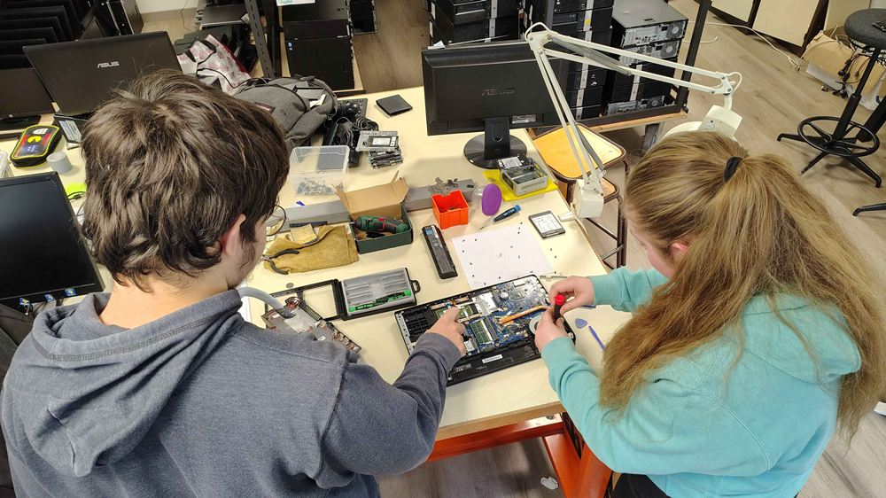

Parce que c'est le bon moment. Ou pour le dire de manière plus alarmiste : parce que c'est maintenant ou jamais !
Ils ne savaient pas que c'était impossible…
La démarche NIRD est un projet très ambitieux car non seulement elle souhaite voir à terme une majorité d'écoles, collèges et lycées équipés majoritairement en Linux, mais elle souhaite aussi et surtout s'intégrer pleinement dans la stratégie numérique et écologique des établissements scolaires, ce qui implique notamment la mobilisation des collectivités et de l'institution.
Or la vente liée et le poids des habitudes rendent difficiles les migrations d'un système d'exploitation propriétaire (comme Windows) vers un système d'exploitation libre, a fortiori lorsque la collectivité n'a pas envisagé d'accueillir cette diversité. De plus Linux existe depuis plus de 30 ans. Il y a toujours eu ça et là, des salles informatiques sous Linux maintenues par des profs geeks experts et passionnés. Mais cela n'a jamais réussi à faire système. Enfin la démarche démarre sans moyen et sans reconnaissance officielle. C'est une initiative de terrain motivée par le sentiment d'urgence et la conviction que cela sera bénéfique pour les élèves et la mission de service public d'éducation.
Une conjoncture (enfin) favorable
Et pourtant voici quelques arguments qui nous rendent optimistes malgré l'ampleur de la tâche :
- La fin brutale du support de Windows 10 rendant artificiellement obsolète des milliers de machines du secteur public ;
- La souveraineté numérique est plus que jamais dans l'agenda politique ;
- La convergence entre les objectifs de transformation numérique et de transition écologique ;
- De plus en plus de collectivités s'orientent vers le logiciels libres et les communs numériques, comme par exemple Lyon, Grenoble et Strasbourg ;
- Linux a beaucoup progressé ces dernières années en qualité et ergonomie et les usages se sont déplacés vers Internet (il suffit d'un navigateur et d'une connexion pour y accéder, indépendamment du système d'exploitation) ;
- Avec la forge des communs numériques éducatifs (et Tchap), nous sommes en capacité de réunir, fédérer, mutualiser et documenter :
- Avec PrimTux, nous disposons d'une distribution Linux conçue par et pour les professeurs des écoles ;
- Avec le projet NIRD du lycée Carnot, nous disposons d'une expérimentation pilote qui témoigne que c'est possible à l'échelle d'un établissement scolaire ;
- Les restrictions budgétaires obligent à penser et dépenser différemment et durablement.
Et enfin, dernier argument et non des moindres, parce que l'institution et le politique nous le demandent, comme vous pouvez le constater avec les références ci-dessous.
Références
La démarche NIRD est parfaitement alignée avec de nombreux documents et recommandations officielles. Ces références peuvent vous aider à convaincre votre établissement scolaire et sa collectivité si vous voulez rejoindre notre mouvement.
Programme scolaire de la spécialité NSI en lycée général (Numérique et Sciences Informatiques)
« Les élèves utilisent un système d'exploitation libre. Les différences entre systèmes d'exploitation libres et propriétaires sont évoquées. »
→ Source du document (Eduscol, 2019)
Stratégie du numérique pour l'éducation 2023-2027
« Le numérique permet de développer l'aisance des enfants et des élèves dans l'usage du numérique dans des situations de recherche, de partage, de travail collaboratif en présence ou à distance, et enfin dans des travaux éducatifs. Cela prend la forme d'apprentissage et de mise en œuvre d'outils numériques fondamentaux – outils bureautiques et collaboratifs, outils éducatifs – au moyen d'actions éducatives régulières et dédiées dans les programmes et dans le temps scolaire, en s'appuyant sur des outils libres et souverains quand ils existent. »
→ Source du document (MEN, 2023)
Doctrine technique du numérique pour l'éducation
« Dans le respect des principes de liberté pédagogique, d'autonomie des établissements et de répartition des compétences entre État et collectivités territoriales, la doctrine technique du numérique pour l'éducation est au service d'un numérique responsable et souverain […] Les services d'infrastructures numériques choisis pour les écoles et établissements permettent d'intégrer des machines utilisant les différents systèmes d'exploitation de façon à servir les objectifs pédagogiques et la neutralité technologique. »
→ Source du document (MEN, 2025)
Socle numérique de base pour le 1er degré
« Cet équipement doit être adaptable pédagogiquement, connecté, sécurisé et éco-responsable. Des matériels reconditionnés avec un système d'exploitation libre et frugal en CPU et mémoire sont une possibilité. »
→ Source du document (Eduscol, 2025)
Guide : Agir pour la transition écologique dans les écoles, collèges et lycées
« Pour s'engager dans une démarche numérique responsable, il est conseillé d'actionner simultanément les différents leviers : diffuser les bonnes pratiques d'usage du numérique auprès des personnels et des élèves, mettre en place une stratégie numérique responsable et accompagner le changement à l'échelle de l'établissement, en lien étroit avec la collectivité territoriale concernée (commune pour l'école, département pour le collège, région pour le lycée), qui est responsable de la construction, de l'équipement, de l'entretien et du fonctionnement, notamment de l'acquisition des matériels informatiques […] 75 % de l'impact environnemental du numérique est dû à la fabrication des équipements. Il est donc important de changer le moins souvent possible de téléphone et d'ordinateur. L'allongement de la durée de vie des terminaux en développant davantage le reconditionnement et la réparation des équipements est un axe majeur de travail, tout comme la sensibilisation des consommateurs à ces enjeux. »
→ Source du document (Eduscol, 2023)
Article 4 de la Charte pour l'éducation à la culture et à la citoyenneté numérique
« La culture des communs numériques favorise la co-création et le partage des ressources pérennes et accessibles que la communauté scolaire peut librement utiliser et modifier. »
→ Source du document (Eduscol, 2024)
Page Éduscol « Éducation et Communs Numériques »
« En éducation, les communs numériques présentent une proximité de valeurs avec la mission du service public d'éducation visant à transmettre savoirs, connaissances et compétences à toutes et tous. Ils participent d'un numérique souverain en faisant le choix d'utiliser et aussi de contribuer aux logiciels libres. Ils favorisent la création et le partage de ressources éducatives libres dans un cadre de confiance. L'usage de la ressource n'étant pas limité dans le temps à un nombre restreint d'utilisateurs, ils participent d'une offre numérique pérenne et inclusive. Ils invitent à co-construire et collaborer entre pairs en faisant ainsi monter en compétences numériques celles et ceux qui y participent. La mutualisation et l'amélioration de l'existant encouragent également le recyclage et un usage sobre et responsable du numérique. »
→ Source du document (Éduscol, 2025)
Numérique & environnement : entre opportunités et nécessaire sobriété (ADEME)
« Les logiciels open source ont de nombreuses vertus notamment en raison du contrôle que peuvent avoir les utilisateurs sur le logiciel. Les avantages sont ainsi nombreux comme les coûts réduits, la flexibilité dans l'usage, le risque cyber plus faible, la durabilité et la pérennité dans les mises à jour permettant de réduire l'obsolescence logicielle (par exemple, la fin du support de Windows 10 en octobre 2025 va rendre obsolète des millions d'ordinateurs), la transparence ou la moindre dépendance à un acteur […] Pour renforcer nos politiques de souveraineté numérique, l'ADEME propose de prioriser les financements vers des solutions numériques ouvertes (logiciel open source, données ouvertes) au service de la transition écologique, de privilégier l'achat et l'utilisation de logiciels open source au sein des administrations et collectivités et lancer des appels à projets communs numérique au sein des territoires et dans des filières industrielles. »
→ Source du document (ADEME, 2025)
Une seconde vie pour le matériel informatique de l'État et des collectivités
« On estime que 75 % de l'empreinte environnementale du numérique provient de la seule fabrication des appareils. Cela doit motiver tous les utilisateurs à limiter le renouvellement des équipements informatiques en les faisant durer le plus longtemps possible. Lorsque ceux-ci sont usagés, il est important d'éviter autant que possible qu'ils ne restent stockés sans être utilisés ou qu'ils ne se transforment en déchets… C'est pourquoi, les services de l'Etat, les collectivités territoriales et leurs groupements sont désormais tenus de développer la collecte des matériels informatiques qu'ils réforment, en vue de leur réutilisation à l'identique ou de leur reconditionnement […] Le décret du 12 avril 2023 fixe des objectifs de 50 % de biens orientés vers le réemploi et la réutilisation en 2025. »
→ Source du document (Loi AGEC, 2023)
Europe : Recommandation du Conseil relative aux principaux facteurs favorisant la réussite de l'éducation et de la formation numériques
« Le Conseil éducation de la Commission européenne recommande aux États membres d'accroître l'efficacité et l'impact des dépenses en matière de connectivité, d'équipements, d'infrastructures, d'outils numériques et de contenus en promouvant l'utilisation de solutions open source, à contenu ouvert ou à données ouvertes et de communs numériques en général, contribuant ainsi à leur essor dans les pratiques numériques et à une meilleure protection des valeurs publiques, de la souveraineté et de la durabilité des ressources numériques dans l'éducation. »
→ Source du document (Commission européenne, 2023)
Unesco : Recommandation sur les ressources éducatives libres (REL)
« Élaborer des politiques d'accompagnement : encourager les gouvernements ainsi que les autorités en charge de l'éducation et les établissements d'enseignement à adopter des cadres réglementaires favorisant la mise à disposition sous licence ouverte des matériels d'éducation et de recherche financés par des fonds publics ; et à élaborer des stratégies permettant l'utilisation et l'adaptation des REL au profit d'une éducation et d'un apprentissage tout au long de la vie, inclusifs et de qualité pour tous. »
→ Source du document (Unesco, 2019)

On parle de la démarche
- Démarche NIRD dans les écoles: précisions sur PrimTux, soutien du CNLL (ZDNet, décembre 2025)
- Obsolescence programmée de Windows: Blois veut passer ses écoles sous Linux (ZDNet, novembre 2025)
- Démarche NIRD : le CNLL soutient l'accélération du déploiement de Linux dans les écoles (CNLL, novembre 2025)